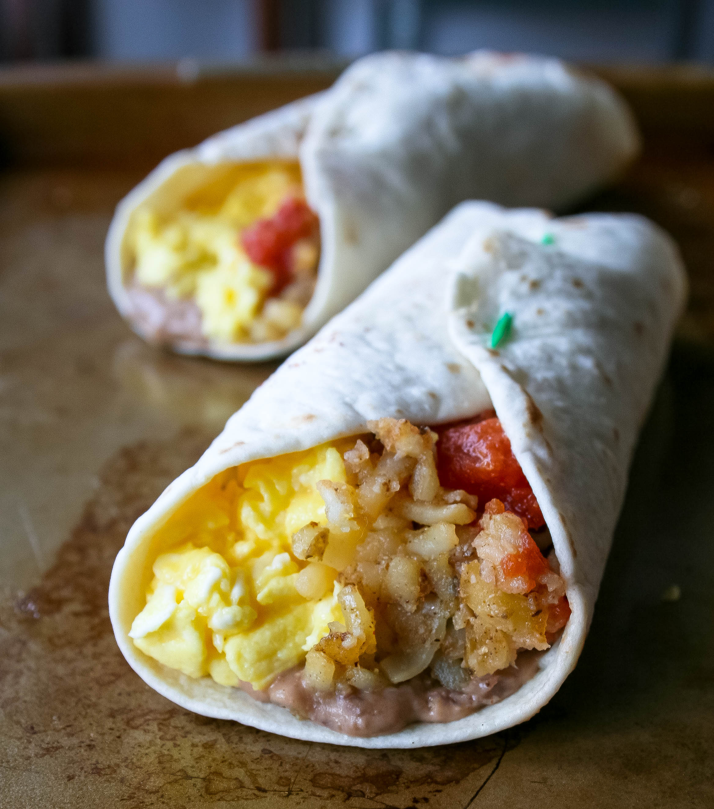
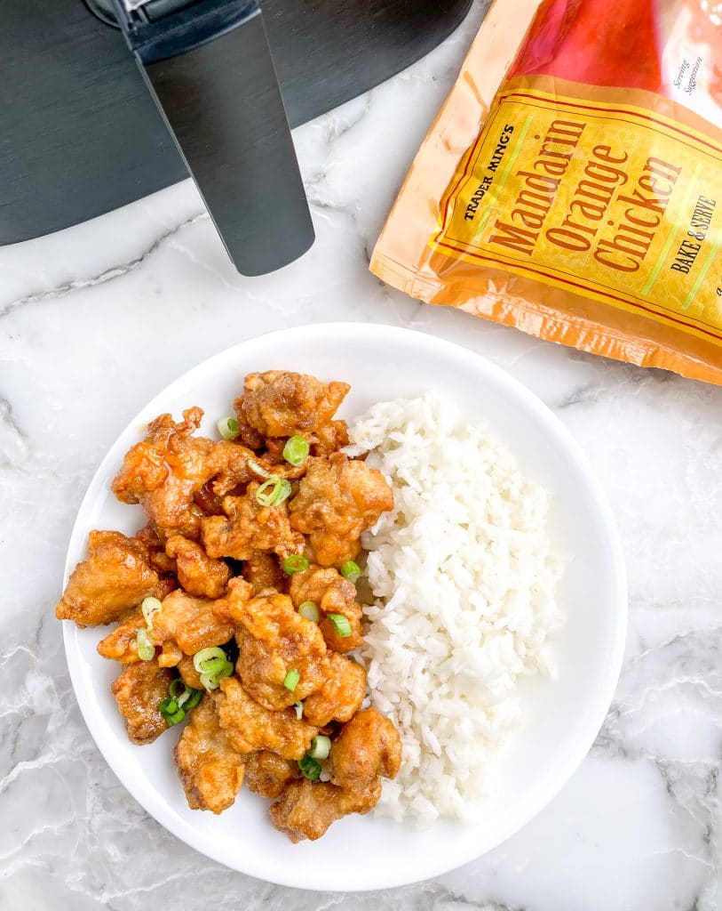
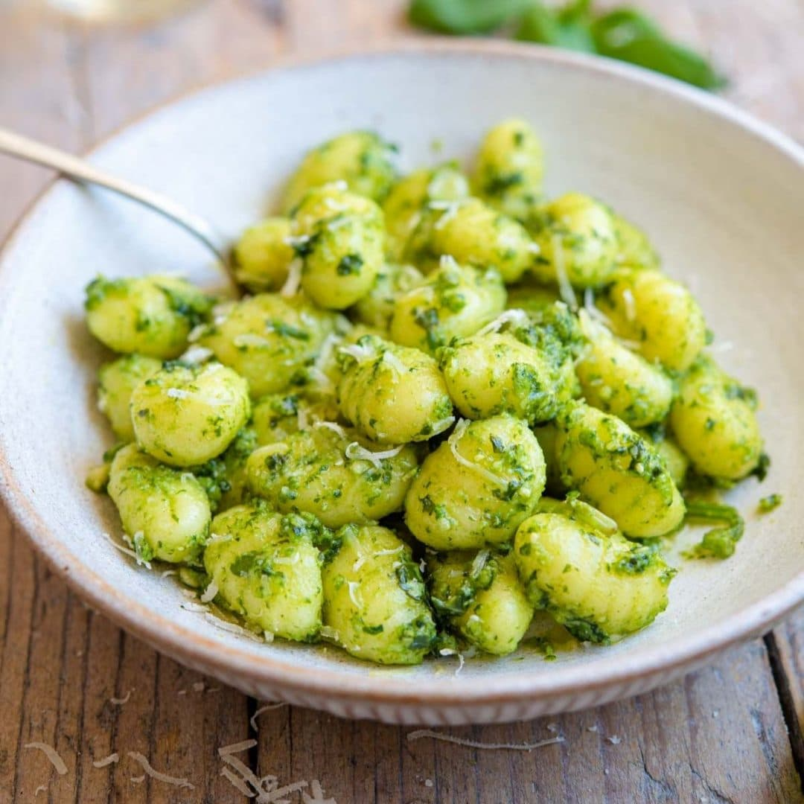
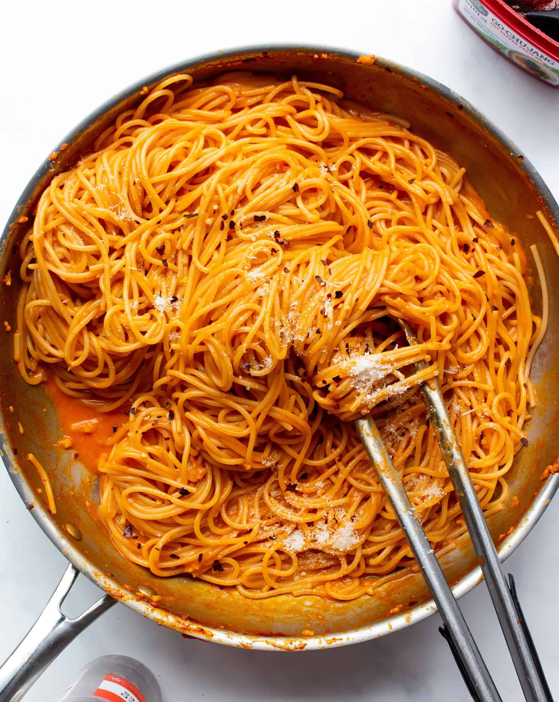
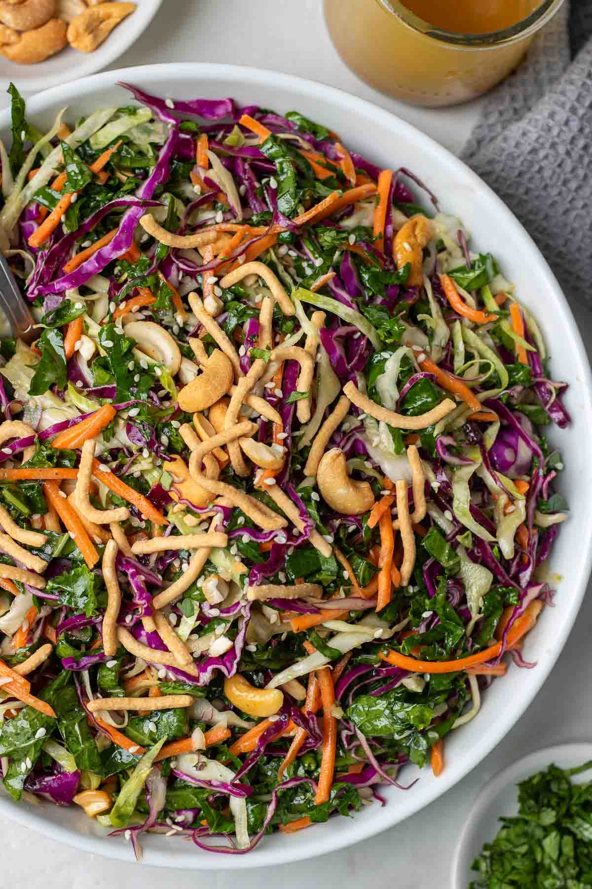
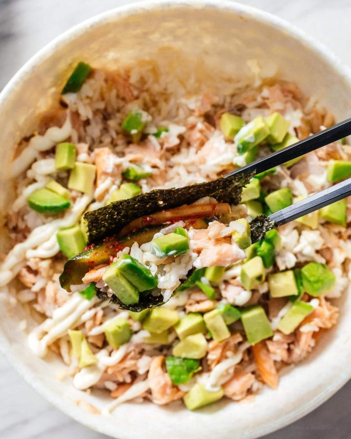

🌞
Breakfast Burrito
All you need is TJ’s frozen hash browns, eggs, and salsa. Cook, roll, and devour.
Ingredients:
- 1 frozen hash brown patty
- 2 eggs
- 2 tbsp salsa
- 1 tortilla
- Cook hash brown according to package instructions.
- Scramble the eggs in a pan.
- Warm the tortilla and layer hash brown, eggs, and salsa.
- Wrap it up and enjoy!
🌙
Orange Chicken Bowl
Grab TJ’s orange chicken and microwave rice. Done in under 10 minutes.
Ingredients:
- 1 bag of TJ’s Mandarin Orange Chicken
- 1 packet of microwave jasmine rice
- Optional: chopped green onions
- Cook the orange chicken per package instructions.
- Microwave rice as directed.
- Mix together in a bowl and top with green onions if desired.
🌙
Mini Gnocchi & Pesto
Sauté TJ’s mini gnocchi with a spoon of pesto. That’s it. So good.
Ingredients:
- 1 bag of TJ’s mini gnocchi
- 2 tbsp pesto
- Optional: grated parmesan
- Sauté gnocchi in a nonstick pan for 5-7 minutes until golden.
- Stir in pesto and cook for another minute.
- Top with parmesan if using and serve warm.
🌙
Creamy Gochujang Pasta
A spicy, creamy fusion pasta with a kick using TJ’s gochujang and heavy cream.
Ingredients:
- 1 pack TJ’s pasta (like rigatoni or spaghetti)
- 1 tbsp gochujang
- 1/2 cup heavy cream
- 1 tbsp butter
- Grated parmesan (optional)
- Cook pasta and reserve 1/4 cup of the water.
- In a pan, melt butter, add gochujang, then stir in cream.
- Add pasta and a splash of pasta water. Toss until coated and creamy.
- Top with parmesan and serve.
🥪🌱
Miso Crunch Salad
A refreshing and umami-packed salad made with TJ’s miso dressing and crunchy slaw.
Ingredients:
- 1 bag TJ’s Cruciferous Crunch Collection
- 1/4 cup TJ’s Miso Ginger Dressing
- 1 avocado, sliced
- Toasted sesame seeds
- Toss salad mix with dressing in a large bowl.
- Add avocado slices on top.
- Sprinkle with sesame seeds and serve cold.
🥪
Salmon Rice Bowl
Inspired by Emily Mariko, but simplified with TJ’s frozen salmon and microwave rice.
Ingredients:
- 1 TJ’s frozen cooked salmon fillet (defrosted)
- 1 TJ’s microwave jasmine rice
- 1 tbsp mayo + 1 tsp sriracha (or spicy mayo)
- Avocado slices
- Seaweed snacks (optional)
- Microwave salmon and rice. Flake salmon into a bowl with rice.
- Top with spicy mayo and mix well.
- Add avocado on the side. Scoop with seaweed snacks like mini tacos!